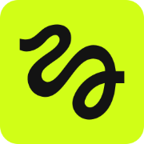

Cómo funciona, de arriba abajo.
Esta página acompaña la presentación. Mismo producto que la landing, explicado para quien decide arquitectura: casos de uso, componentes reales, la secuencia de una generación y el método con el que cinco personas lo construyeron en paralelo sin pisarse.
El repositorio, en cifras
- 0
- tickets
- 0
- fases
- 0
- personas
- 0
- ramas en paralelo
- 0
- proveedor de IA
Next.js 16.3 · React 19.2 · Tailwind v4 · Clerk 7 · MongoDB driver 7 · Vercel Blob 2 · Higgsfield. Versiones exactas de package.json.
Cuatro actores, ocho capacidades.
Un visitante se convierte en usuario al iniciar sesión. El dueño es también un usuario, con tres capacidades extra. Higgsfield es un actor externo: el sistema le delega la generación, nunca la simula.
Una aplicación Next.js, cuatro servicios gestionados.
No hay backend separado: las rutas de API viven dentro del mismo proyecto Next.js y se despliegan juntas en Vercel. Cuatro integraciones externas, cada una con un contrato fijado en plan.md antes de escribir código.
plan.md Next.js 16.3
Next.js 16.3 Clerk 7
Clerk 7 MongoDB driver 7
MongoDB driver 7 Vercel Blob 2
Vercel Blob 2
Higgsfield GitHub Spec Kit
GitHub Spec Kit Claude Code construye
Claude Code construyeEste es el diagrama de barritas.
Cada columna es una lifeline: la vida de un actor en el tiempo, de arriba abajo. El rectángulo angosto sobre la línea es la activation bar — cuándo ese actor tiene el control. Haz scroll: los mensajes se activan paso a paso, en el orden real en que ocurren.
La imagen se genera dentro de una sola llamada — Next.js sondea a Higgsfield internamente, cada 2s hasta 90 intentos, y responde una vez con el resultado. El video sí expone su espera: /api/video/[id] se consulta cada tres segundos desde el cliente hasta que el estado deja de ser pending (FR-012).
Imagen — una respuesta
El cliente pregunta una sola vez. El sondeo a Higgsfield pasa adentro de Next.js — invisible desde aquí.
Video — sondeo hasta listo
El cliente sí ve la espera: la misma pregunta, cada 3s, hasta que la respuesta cambia de forma.
Mismas rutas, mismo cliente. La diferencia no está en el diagrama de arriba — está en cuántas veces la respuesta dice lo mismo antes de cambiar.
Cinco comandos, cinco archivos, en ese orden.
Nadie escribió spec.md ni tasks.md a mano: salieron de correr estos cinco comandos, uno detrás del otro, con Claude Code como integración. Cada uno lee lo que dejó el anterior y produce un archivo — esa es la fuente de verdad. Ábrelo en VS Code y ahí está, literal, lo que el agente usó.
| Comando | Qué fija | Archivo — ábrelo en VS Code |
|---|---|---|
| /speckit.constitution | Las reglas que no se negocian: test-first, la suite corre offline sin llaves ni red, ownership de archivos define el paralelismo. | .specify/memory/constitution.md |
| /speckit.specify | Qué hace la app y por qué — sin una palabra de tecnología. Las 4 historias de usuario, priorizadas P1–P4. | specs/001-ai-media-generator/spec.md |
| /speckit.plan | El stack exacto y los contratos entre fases — firmas de función, rutas HTTP — lo que deja a tres personas construir sin verse. | specs/001-ai-media-generator/plan.md |
| /speckit.tasks | Los 39 tickets, repartidos en 5 fases. Cada fase declara qué archivos posee y cuáles nunca toca. | specs/001-ai-media-generator/tasks.md |
| /speckit.implement fase N | El código real de esa fase, ticket por ticket — la prueba se escribe antes que el código que la pasa. | app/ · components/ · lib/ |
Los cinco comandos están declarados en .specify/workflows/speckit/workflow.yml con nombre de comando en punto — speckit.specify, no speckit-specify.
5 personas, 5 fases, cero conflictos de merge.
Sergio construye la base. Mateo, Johan y Tomás arrancan sus tres fases al mismo tiempo, en ramas distintas. Santiago las junta y cierra. Nadie espera a nadie porque cada fase declara de qué archivos es dueña — Owns — y cuáles nunca toca — Never touches —, y ningún archivo aparece en dos listas.
Fase 1
main- Owns
- Todo lo que no es de las fases 2, 3 o 4 — el esqueleto, el sistema de diseño, los dobles de prueba.
Fase 2 · Mateo
001-frontend- Owns
- Pantallas,
proxy.js, hooks. - Never touches
lib/,app/api/,app/dashboard/.
Fase 3 · Johan
001-backend- Owns
lib/db.js,lib/higgsfield.js, rutas de imagen/video.- Never touches
- Ninguna pantalla,
app/dashboard/,app/api/settings/.
Fase 4 · Tomás
001-dashboard- Owns
lib/settings.js,app/dashboard/, T030: las llaves reales.- Never touches
lib/db.js,lib/higgsfield.js, pantallas de fase 2.
Fase 5 · Santiago
main- Owns
- Nada nuevo — junta las tres ramas, corre T032, T033, T037 y despliega.
Por qué hay dos copias del repositorio.
Un agente tarda entre 5 y 15 minutos por ticket — construir las cinco fases en vivo no cabe en una presentación de 10 minutos. La solución no es fingirlo: es separar qué se construye antes de la fecha de qué se construye en vivo, delante de la audiencia.
El repo real
main- Tiene
- Las cinco fases ya construidas, de antemano, y el
.env.localcon las llaves reales. - Para qué
- El
npm run devdel cierre — la app funcionando de verdad, con cuentas reales.
demo-speckit
carpeta aparte- Tiene
- Solo hasta la fase 1, en el tag
fase-1. Las fases 2, 3 y 4 todavía no existen ahí. - Para qué
- Lanzar
/speckit.implement fase 2·3·4en vivo — el agente construye de verdad, en tiempo real, sin arriesgar el repo del cierre.
Sin la segunda copia, git checkout -b 001-frontend en vivo falla con fatal: a branch named '001-frontend' already exists — esa rama ya se construyó de antemano en el repo real. El tag pre-fase-1 — el repositorio sin código, solo las specs — es otra cosa: sirve para practicar antes, no para la demo en vivo.
Seis decisiones que no son solo técnicas.
Paralelismo por contrato de archivos
Tres personas construyen a la vez sin coordinarse en vivo. El límite no es disciplina de equipo, es una lista de archivos por fase que no se solapa.
Principio V · plan.mdSuperficie de un solo proveedor de IA
Higgsfield sirve imagen y video con el mismo contrato. Un proveedor menos que auditar, negociar y monitorear en producción.
plan.md · ProviderFreno de gasto sin redeploy
Un interruptor persistido detiene toda generación nueva al instante. El trabajo en curso no se corta — solo se cierra la llave de nuevas llamadas pagadas.
FR-017 · FR-019Test-first como política, no como esperanza
Cada ticket registra su prueba fallando antes que el código que la pasa. La suite corre completa sin credenciales, sin red, en menos de 60 segundos.
FR-031 · FR-032La especificación es auditable
39 tickets trazables a spec.md. Lo que la app hace hoy se puede leer antes de correr una sola línea de código.
El merge no es el final de la verificación
T032 compara explícitamente el doble de prueba contra el proveedor real antes de desplegar. Ramas verdes por separado no garantizan un sistema correcto junto.
T031–T033La especificación es el código fuente.
39 tickets, 5 fases, 5 personas. Cero líneas de código de aplicación escritas a mano.